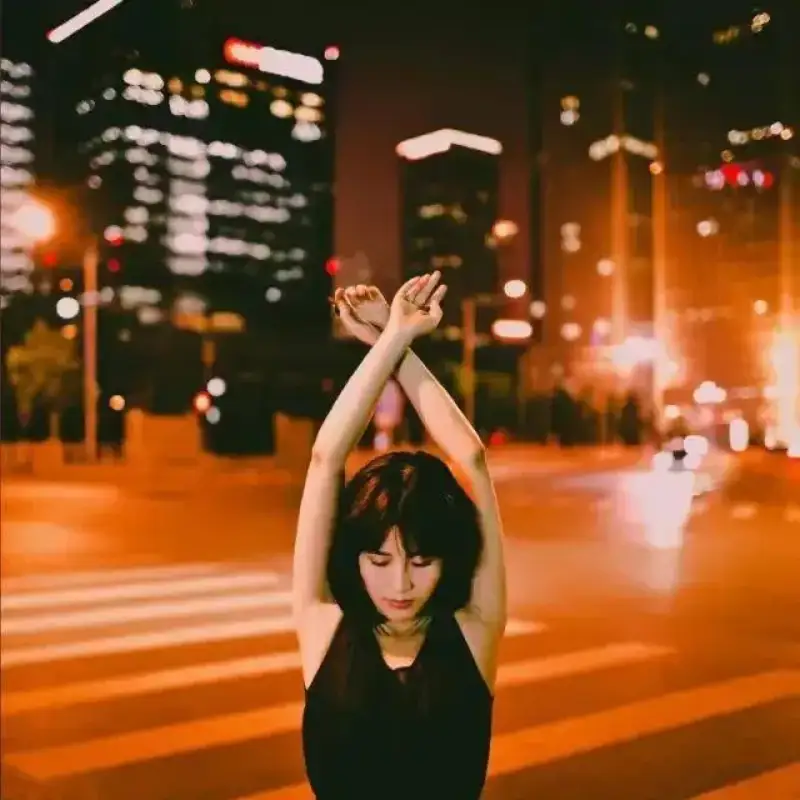
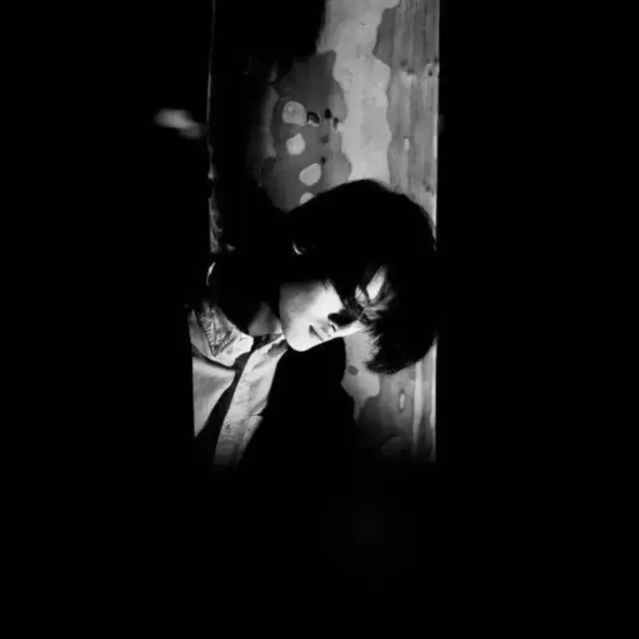
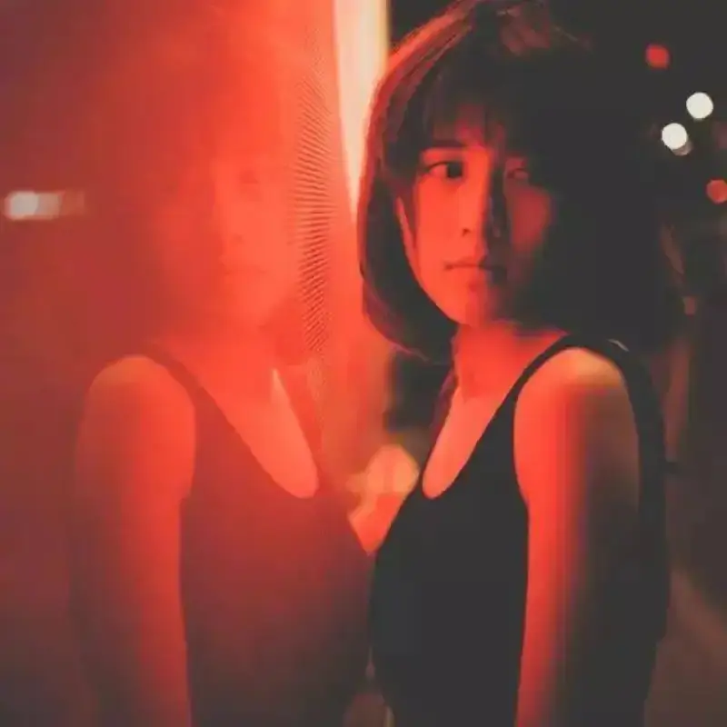
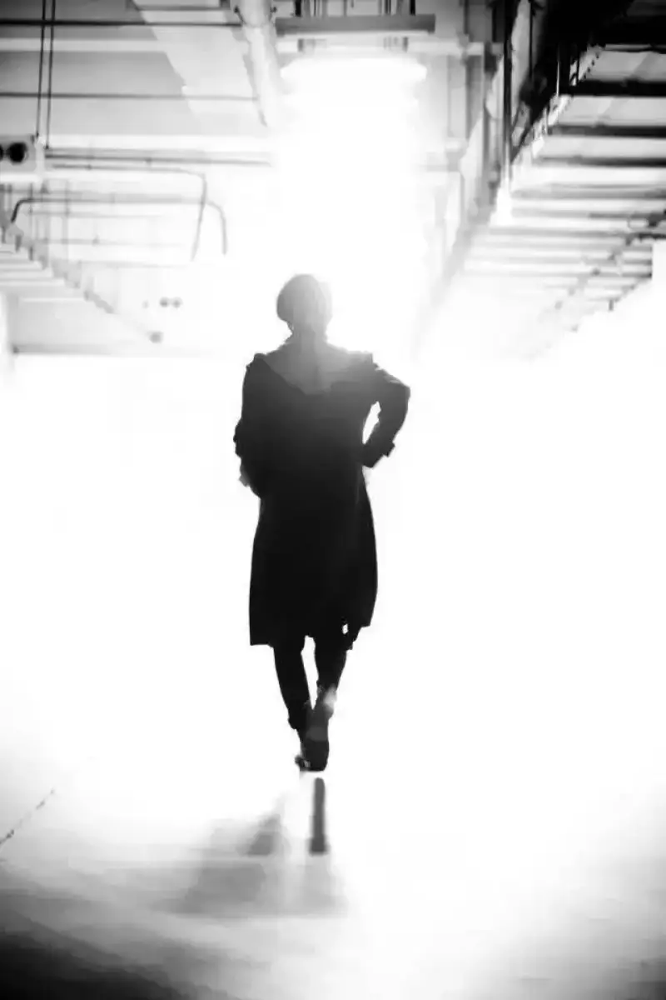
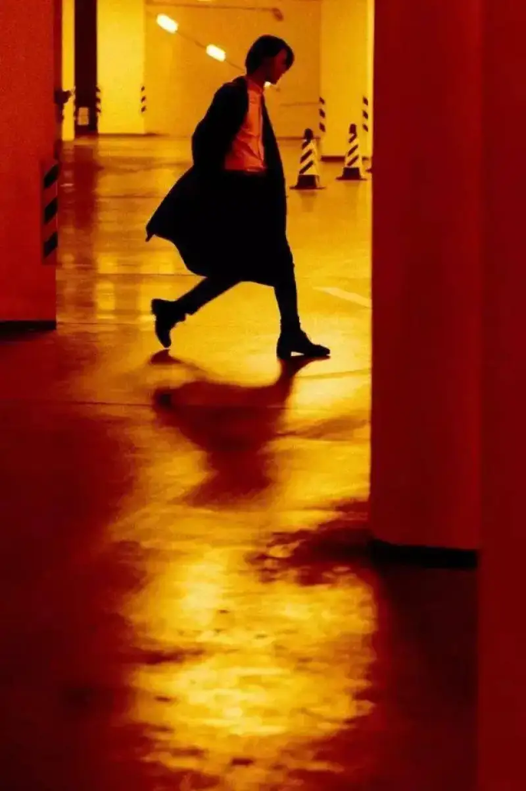
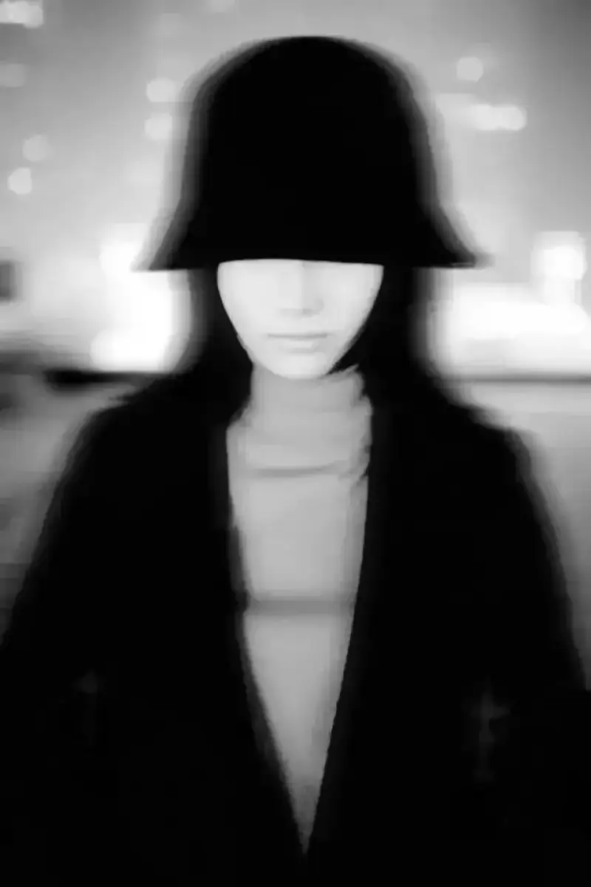

Today is the 15th day of the first lunar month.
We welcome the Lantern Festival.
It is the first full-moon night of the new year.
On the Lantern Festival, people admire the bright moon.
A round moon quietly climbs the sky.
Crowds pour onto the streets.
Friends call to friends to admire the moon and talk.
This custom has run for a thousand years.
"The moon climbs the top of the willow, and we meet after dusk."
"I searched for her a thousand times in the crowd.
Suddenly I turned, and there she stood, where the lantern light thinned."
The bright moon hangs high, and young men and women pass each other by.
Those romantic, gentle moments
all flow through the poems.
The biggest problem shooting at night is low light. To shoot portraits at night, you usually need camera hardware to help. Pair a fast lens with high ISO. If you have an external flash, bounce the flash off a surface to light the person. Raise the camera exposure as much as you can, and keep the shutter speed fast. That freezes the person when you grab a candid shot.
So in night shooting, the key is to expose both the foreground person and the background correctly. Once you understand this, you learn night portrait skills fast.
Subject idea
The idea of a subject, or the idea of a feeling, sets the style of your shots. If you skip this, your photos at best look "pretty" and are forgotten the moment you turn away. Decide the main feeling you want to shoot today. Then plan the subject's clothing, makeup, location, and the shooting approach in advance.
Gear choice
Because of the environment and the light, night portraits often need high ISO and a fast lens. In some settings you set ISO above 2000 to hold the shutter speed. Noise appears, but if you do not need top quality output, a noise-reduction plug-in in post work is enough.
The camera I use is a Canon 6D. The lens is a Canon or Sigma 35mm f/1.4, and sometimes a 50mm f/1.8.
Using flash
Unlike the case above, here you use flash together with a slow shutter. This keeps the person correctly exposed and brings the environment into the frame at the same time. It is vital to balance the ambient exposure settings and the flash output. Use the convenience of a digital camera and try many exposure mixes, and you will get good photos.
Usually at night the background is dark. If you know how exposure works, a dark background means you need a longer exposure to bring out the background lights and colors. That time may be 1/10 second or longer. But for the model in front, because you use flash, only about 1/100 second is needed for exposure. So if you shoot at the flash sync speed, the foreground person is well exposed and sharp, but the background is dark. The person then looks harsh and unnatural against the background.
To fix this, first meter the background. You find that f/1.6 and 1/10 second gives a correct background exposure. You set the exposure mix manually to f/1.6 and 1/10 second, and then turn on the flash. In the result, both the faint background lights and the model's face are well exposed.
Composition
Center composition is the routine choice. Beyond that, when you design the visual language, try film-like composition. Use large empty space or structural lines to carry the link between the person and the scene. Try other compositions too.

Using the environment
Without flash, most people shoot night portraits where the light is good: footbridges, busy pedestrian streets, and plazas. These places do have good light, but look for more scenes to enrich a set. Use landscape lamps, underground parking, billboards, and other man-made light sources.


Shooting tips
Some techniques add highlights to a whole set, such as double exposure and silhouettes. For double exposure, turn on live view if your camera has it. It helps you compose the second shot directly.

Post-processing ideas
Be bold with color. Night is already colorful, and if you only shoot bright, fresh, airy tones, it becomes bland. Bold post color makes your photos stand out. Some shots push the white balance to an extreme. Try it as far as you can.

Know what to leave out:
Do not try to lift every detail in the frame. The charm of night is the stronger contrast between light and dark. A dark-toned shot lets people see the center of your frame more easily.
Try black and white:
After you convert some shots to black and white, especially the rejects, you find the light-dark contrast and the emotional strength beat the color version.
